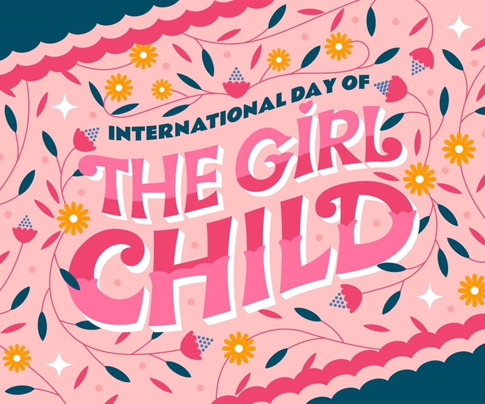

Międzynarodowy Dzień Dziewcząt
11 październik
Międzynarodowy Dzień Dziewczynek, również Międzynarodowy Dzień Dziewcząt
(ang. International Day of the Girl Child) – coroczne święto obchodzone
11 października, ustanowione w 2011 roku przez Zgromadzenie Ogólne ONZ.
To święto ma na celu przybliżenie społeczeństwu szczególnych wyzwań,
przed jakimi stoją dziewczynki na całym świecie. Działania i wydarzenia związane
z tym dniem organizują UNFPA, UNICEF i UN Women.
